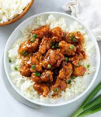

Firecracker Chicken

Firecracker Chicken Recipe
Description
Firecracker chicken is very similar to sweet and sour chicken, only much spicier (hence the name). Browning the chicken keeps it moist and
tender and if you serve it over rice, the heat is mellowed out.
Ingredients
- 3 tablespoons unsalted butter
- 1/2 cup finely diced yelow onion
- 1 1/2 teaspoons kosher sale, divided
- 3 tablespoons all-purpose flour
- 4 cups cold milk
- 1 cup shredded white Cheddar cheese
- 1 (12 ounce) package dry egg noodles
- 2 (5.5 ounce) cans tuna packed in olive oil, drained and crumbled, or to taste
- 3/4 cup frozen peas, thawed and drained
- 1 pinch cayenne pepper
- 1/4 teaspoon freshly ground black pepper
- 1/4 teaspoon Worcestershire sauce
- 1/2 cup plain bread crumbs
- 1/2 cup grated Parmigiano-Reggiano cheese
- 2 tablespoons olive oil
Steps
- Preheat the oven to 375 degrees F(190 degrees C). Lightly Butter a 9x13-inch casserole dish
- Melt 3 tablespoons butter in a medium saucepan over medium heat. Saute onion with 1/2 teaspoon kosher salt until it starts to soften up and turn translucent, 3 to 4 minutes. Add the flour, and cook, stirring, for 3 minutes, reducing heat if needed.
- Pour in cold milk and whisk for 1 minute. Raise heat to medium-high and cook, stirring often, until the sauce thickens and comes to a simmer. Remove from heat, whisk in Cheddar cheese, and reserve until needed.
- Fill a large pot with water and remaining salt and bring to a rapid boil. Cook egg noodles for 5 minutes. Drain well and add to a large mixing bowl. Stir in the reserved sauce, followed by tuna, peas, cayenne, black pepper, and Worcestershire sauce. Mix with a spatula until evenly combined.
- Pour the mixture into the prepared dish. Mix bread crumbs, Parmigiano-Reggiano cheese, and olive oil together in a small bowl until combined and resembling wet sand. Sprinkle evenly over the casserole.
- Bake in the center of the preheated oven until browned and bubbly, about 30 minutes. Let sit for 10 minutes before cutting and serving.